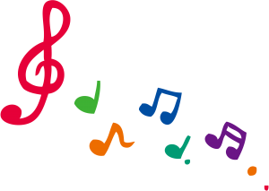

2021 - 2021
A pedagogia de Dalcroze e sua importância na formação
do Músico Educador.
Escola de Música da UFPA, EMUFPA, Brasil.
2020 - 2020
Extensão universitária em Competências Profissionais,
para tempos de mudança.
Pontifícia Universidade católica(RS), PUCRS, Brasil.
2019 - 2020
Curso Ergonomia. Cursos online EDUCA, Brasil.
2014 - 2014
Extensão universitária em ARTES - Ensino fundamental.
Faculdade de Educação, FDE, Brasil.
2012 - 2014
Festival Int. de Inverno de Domingo Martins.
Faculdade de Música
do Espírito Santo, FAMES, Brasil.
2011 - 2011
Classe de Tuba. Movimento internacional de Música
de Uberlândia,
MIMU, Brasil.
2010 - 2010
XVI Festival Brasileiro de Trombonistas. Associação Brasileira
de Trombonistas, ABT, Brasil.
2010 - 2010
Encontro regional de Trombonistas e Tubistas. Universidade
Federal de Minas Gerais, UFMG, Brasil.
2010- 2010
11 Festival Música nas montanhas/poços de caldas. Festival Música
nas montanhas, Poços de Caldas, FMM, Brasil.
2009 - 2009
II Encontro de Metais no Pará. Governo do
Estado do Pará, PA, Brasil
2008 - 2008
XIV Festival Latino-Americano de Trombonistas. Associação
Brasileira
de Trombonistas, ABT, Brasil.
2007 - 2007
XIII Encontro Brasileiro de Trombonistas. Associação
Brasileira de
Trombonistas, ABT, Brasil.
2007 - 2007
Aperfeiçoamento Técnico-Musical. Fundação
Clóvis Salgado, FCS, Brasil.
2007 - 2007
Saúde e Comportamento Vocal do Professor. Secretaria de Estado de
Planejamento e Gestão, SEPLAG-MG, Brasil.
2005 - 2005
6 Festival Música nas montanhas. Festival Música nas
montanhas,
Poços de Caldas, FMM, Brasil.
2005 - 2005
XI Encontro Brasileiro de Trombonistas. Associação
Brasileira
de Trombonistas, ABT, Brasil.
2001 - 2001
Festival de Inverno de Ouro Preto. Centro universitário
de Belo
Horizonte, UniBH, Brasil.
1998 - 1998
Curso de Locução. Beth Seixas Escola
para Locutores, BSEL, Brasil.